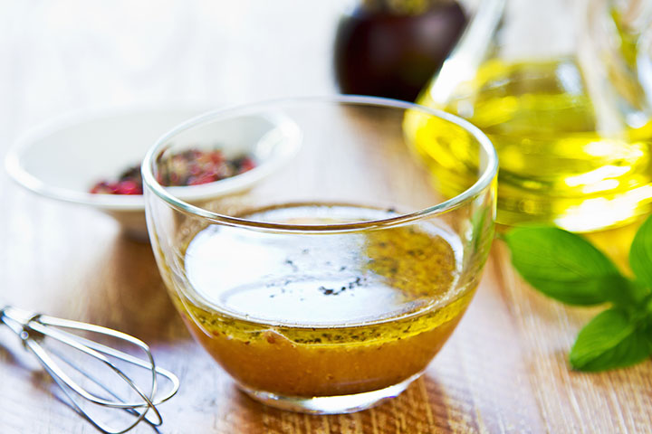

Dressing up a Salad
Summer is nearly here! We love this season because it’s the perfect time to eat all the great organic vegetables from our neighboring farms. One way to enjoy the delicious abundance of fresh fruits and vegetables is in salads. However, at Two Trees we refuse to eat boring, tasteless salads. Therefore, we’re going to share with you the reasons to make your own, and the basics for creating custom salad dressings.
Make your own salad dressing
Sure, the grocery store is full of salad dressings, but often they’re full of preservatives that impact the taste and nutritional value of the dressing. Furthermore, they can sit on the shelf for a long time before they’re bought, which can further reduce the nutritional value of the product.
To get started designing your own custom dressing, you need as little as two ingredients: an oil and an acid. From there you can get as creative as you like.
Homemade salad dressing is good for your health
Olive oil contains polyphenols which, according to research, can play a role in slowing cardiovascular and neurodegenerative diseases. Olive oil also has antioxidant properties. Research into vinegar shows it might be slightly helpful with controlling the body’s glycemic response. Together there’s no doubt, they’re delicious!
We use this basic combination here in our bite-sized Caprese salad appetizer using mini mozzarella balls and cherry tomatoes. We serve this with our basil infused olive oil and aged balsamic vinegar. It’s amazing!
Make it to your taste
There are four main ingredient types to consider when making a salad dressing: fat, acid, sweetener, and spice. For fat we recommend olive oil because it carries flavor so well and it has so many healthy properties, though you can definitely try different oils or healthy fats like avocado.
Acids
The two most common acids in a salad dressing are vinegars and fruit juices. You’ll want to pick the flavors that you think will bring the most out of your salad components. This might require some delicious experimentation!
- Vinegars
- Apple cider
- rice
- balsamic vinegars
- Fruit juices
- Lemon
- lime
- orange
- grapefruit juices
Sweeteners
Sugar is a common sweetener used in store-bought salad dressings. However, we recommend trying a sweet fruit juice like orange or a natural sweetener like agave or honey. In fact, if you want an emulsifier in your dressing, honey is an excellent choice. A nice benefit of making your own dressing is that you can control how much added sugar is going into your food.
Spice
Start with salt. A little can go a long way and bring out the natural sweetness in your fruits and vegetables. Experiment with herbs like rosemary, mint, basil, or tarragon. If you’re wanting some extra zip or an emulsifier, try Dijon mustard.
The trick to making a bri